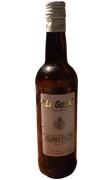
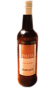
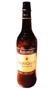
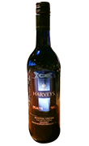

シェリーは、製造方法によってジャンルを区別します。
ここでは様々なシェリーのジャンルと、
それぞれの代表的な銘柄をご紹介いたします。
また、当店ではこちらで紹介しているもの以外にも、
様々なシェリーを取り揃えておりますので、
お気軽にお申し付けください。
Manzanilla
味・・・辛口
酸素に触れさせないで作る、透明に透きとおったシェリー。辛口で、白ワイン感覚で飲めます。冷やして飲むのもおすすめです。大きな癖がなく、どのような料理にも合うので、初心者の方にもおすすめです。
マンサニージャの代表的な銘柄

ラ・ゴヤ
Amontillado
味・・・辛口
酸化させて作る、琥珀色のシェリーです。
うまみ、酸味がのっており、
シェリーだけで楽しみたい場合などにも
こちらがおすすめです。
アモンティリャードの代表的な銘柄

スレタ・
アモンティリャード
Palo Cortado
パロ・コルタドの代表的な銘柄

オビスポ・ガスコン
Cream
味・・・甘口
ミディアム・シェリーと同様に、
オロロソをベースに、極甘口のシェリーをブレンドします。
ミディアム・シェリーと比べて、
甘口シェリーの配分が多いのが特徴です。
クリームの代表的な銘柄

ブリストル・クリーム
Pedro Ximenes
味・・・極甘口
ペドロ・ヒメネスという品種のブドウ作るシェリーです。
糖度が高く、とろりとした舌触りが特徴です。
モスカテルよりも甘さがしっかりとしています。
食後酒にオススメです。